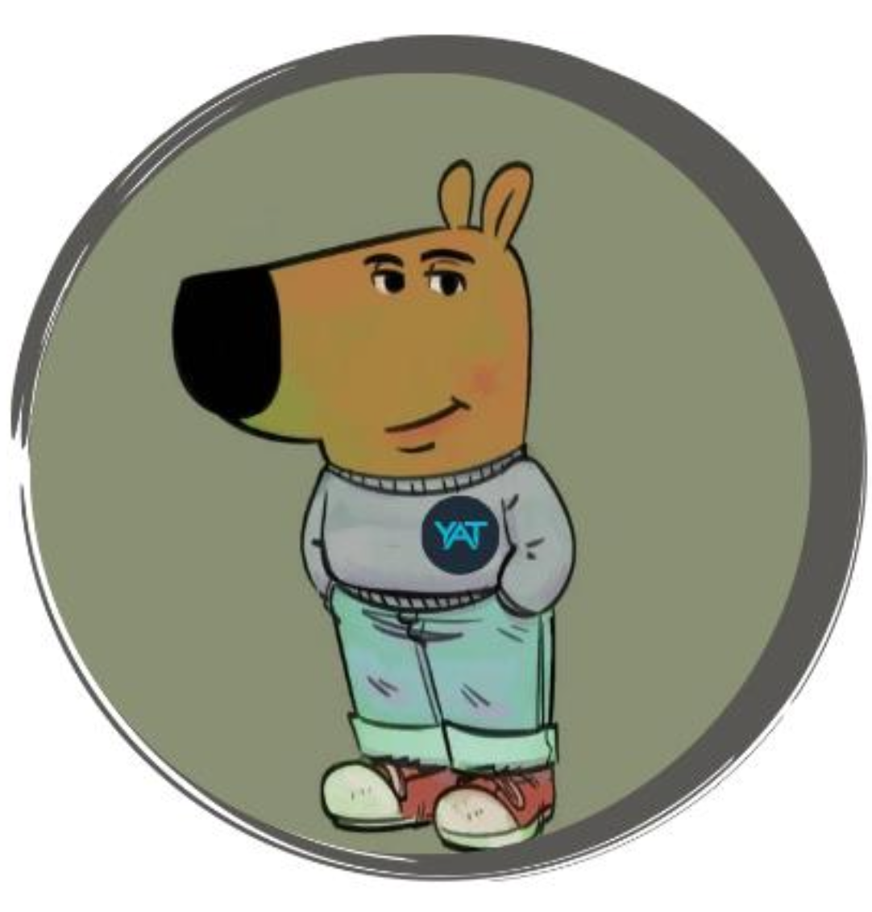

Challenge
Conception et Innovation -CI3-
May 27, 2025


On recupère l’Electronique et les pièces en impression 3D ♻️ ❗❗❗❗

et maintenant !

Est qu’il y a un prix pour le gagnant?

Est qu’il y a un prix pour le gagnant?

D’autres questions?

Brasquito Vs ROBOCOOOOT
YAT Vs. La Tour de Pise


Ener Vs. 1DIREXION
JIM Vs. ARTI CUBE